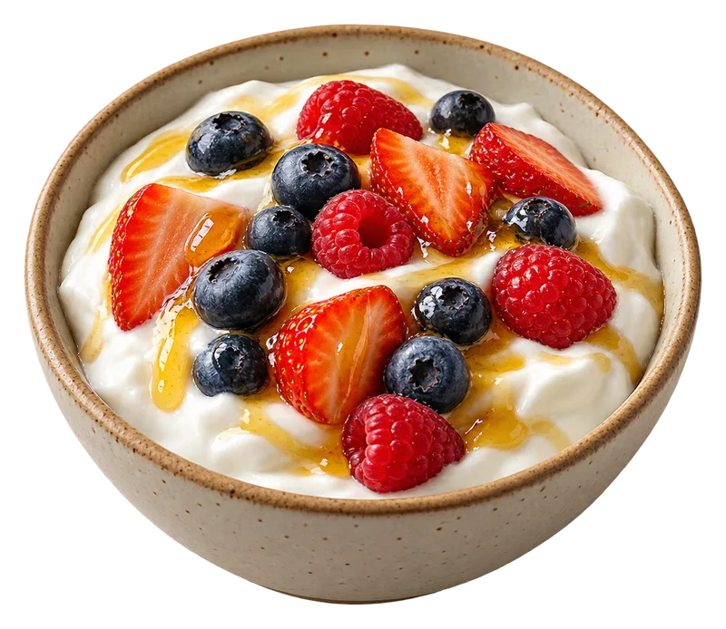

NATURAL, CASERO, HECHO ACÁ
Empezá el día
con algo bueno.
Granola crocante, yogur hecho en casa y sabores reales para tus mañanas, pausas y antojos. Elegí tus favoritos y armá tu pedido.
Ver el menú ↓
MENÚ ILUSTRATIVOUna tienda saludable de ejemplo
Explorá la tienda y su panel de administración.

Simple, rico y caseroGranola artesanal · hecha en casa
BUENO
Y NATURAL
Y NATURAL
⌂Retirá por el localOpción de retiro de ejemplo
➜Te lo llevamosConfigurá tus zonas de entrega
♡Ingredientes realesHecho en tandas pequeñas
ALGO RICO TE ESTÁ ESPERANDO
El menú de hoy
EL FAVORITO DE LA SEMANAUn buen día
Un buen día
empieza con algo rico.
Granola artesanal, yogur cremoso y fruta de estación.

Y REAL ✳
PREPARADO PARA VOS
Todo lo rico

YOGUR GRIEGOFRUTA Y MIEL
UNA FAMILIA DE PRODUCTOS
Una misma marca, cada sabor con su carácter.
Grano Vivo usa una línea de envases claros, un sello reconocible y un acento de color por variedad. La idea es que granolas, yogures y frutos secos se vean parte de la misma familia y se encuentren fácil en el menú.
gv.Prototipo visual
contenido de demostración
contenido de demostración
☼¿Ya te dio hambre?Tu mesa está a un pedido de distancia.
Elegir algo rico →